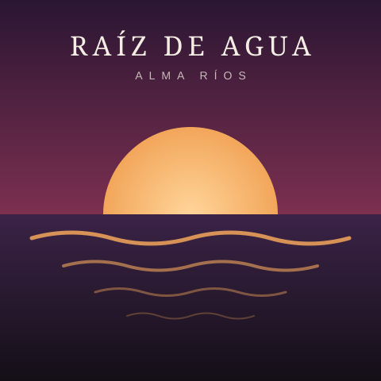

Raíz de agua en Santiago
Teatro Nescafé de las Artes, Santiago
Bienvenidos y bienvenidas
Cantautora de folk contemporáneo
Canciones que nacen entre la lluvia del sur y el ruido de la ciudad. Guitarra, voz y memoria para quien quiera escuchar.

Sobre mí
Nací en Valdivia, donde aprendí a tocar guitarra con mi abuela y a escribir escuchando la lluvia sobre el techo de zinc. Hoy vivo en Santiago de Chile y hago canciones que mezclan el folclor latinoamericano con sonidos actuales.
Mi música habla de territorios, de mujeres que resisten y de lo que se queda cuando uno se va. Cada concierto es una conversación íntima con el público.
Trayectoria
Algunos hitos que han marcado su carrera artística.
Comienza a presentarse en bares y centros culturales de Valdivia con un repertorio propio.
Cinco canciones grabadas de forma independiente que la llevan a girar por el sur de Chile.
Su primer larga duración obtiene el Premio a la Mejor Artista Emergente Folk 2021.
Más de 30 conciertos entre Chile, Argentina, Perú y México.
Su disco más personal, presentado con entradas agotadas en Santiago.
Agenda
Gira Raíz de agua 2026 – 2027. ¡Te espero!
Teatro Nescafé de las Artes, Santiago
Parque Cultural de Valparaíso, Valparaíso
Teatro Regional Cervantes, Valdivia
Teatro Biobío, Concepción